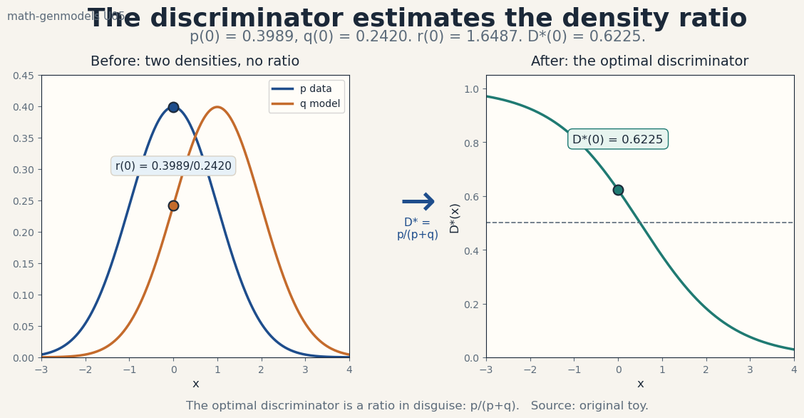
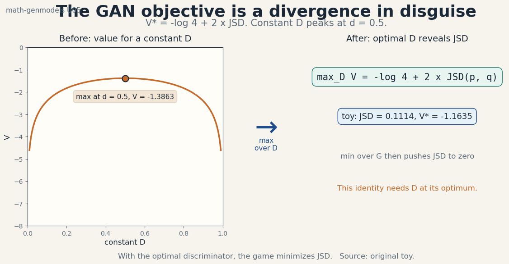
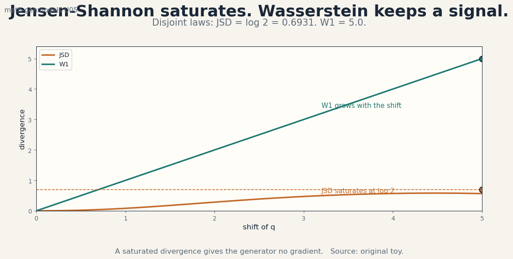
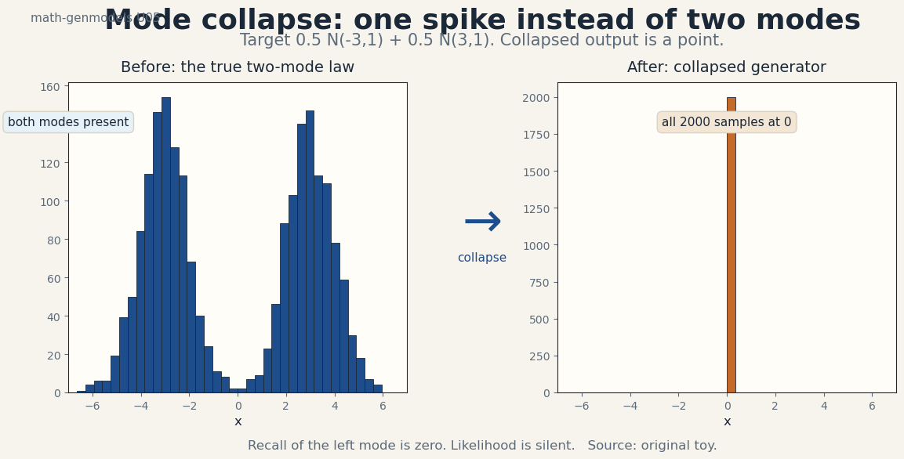

U05 · Adversarial and ratio-based estimation
Lesson U05: Adversarial and ratio-based estimation
Unit: math-genmodels-U05. Leaf concepts: math-genmodels-U05-C01 to C12. Date: 2026-10-06. Baseline: October 6, 2026.
Source mapping
This lesson is locally authored bridge content. It does not reproduce any instructor lecture. Source attribution for the leaf concepts is PENDING: SRC-01 is unresolved, SRC-04 was not retrieved, and SRC-03 notebooks and PDFs were not inspected (see source_manifest.md, source_gaps.md G1-G7). The mathematics below is standard textbook material restated as an independent bridge. Status of every leaf: PLANNED / SOURCE ATTRIBUTION PENDING.
Scope and objectives
Scope: learning a law from samples without ever writing its density. Implicit distributions, the density ratio, the discriminator optimum, the GAN objective, divergence assumptions, optimal transport, the Lipschitz constraint, WGAN and the gradient penalty, mode collapse, identifiability, training stability, and evaluation limits.
Objectives: after this lesson the learner can explain why an implicit law needs no density, compute a density ratio and the optimal discriminator at a point, derive the GAN objective from the ratio game, show that the optimum of the game is a Jensen-Shannon divergence, explain why JSD saturates on disjoint laws, state the Wasserstein dual, enforce the Lipschitz constraint, diagnose mode collapse from samples, and name what GAN scores can and cannot measure.
Dependencies: P08, P09, P11. Shared modules are linked in prerequisites.md. Each concept below still carries local remediation. U01 through U04 are used for density, divergence, and KL ideas. No later unit is used.
The running toy
Real law p(x) = N(0, 1). Model law q(x) = N(1, 1). The test point is x = 0. Key numbers: p(0) = 0.3989, q(0) = 0.2420, ratio r(0) = 1.6487, optimal discriminator D(0) = 0.6225, JSD(p, q) = 0.1114, V = -1.1635, W1 = 1.0. Every number in this lesson was computed from these definitions or from seed 10 draws stated in the text. Figure scripts print the audited values.
C01, implicit distributions
Motivating question: can a model define a law without ever writing down its density?
Start from zero. z ~ Uniform(-1, 1). Set g(z) = z^2 + 1. Every draw of z gives a draw of x in [1, 2]. The law of x has no clean density formula: the fold of the uniform under z^2 produces a curve that is easy to sample and painful to write. Yet the model is complete for sampling. This is an implicit distribution: the law exists through the procedure that draws from it, not through a formula for p(x).
The idea: an implicit law is defined by a sampler, not by a density. A generator network g with noise input z defines the law of g(z). Sampling is one forward pass. Scoring p(x) for a given x is intractable in general: it would need the integral over all z with g(z) = x. Flows (U04) pay for tractable density with invertibility. Implicit models refuse the price and keep only the sampler.
Computed example: draw z = -0.6, 0.2, 0.9. Then x = 1.36, 1.04, 1.81. Three valid samples, no density evaluated. The support is [1, 2]. The density at 1.5 has no closed form the script can print.
Variables, units, shapes, assumptions: z in R^d from a fixed noise law. x = g(z) in R^D. Assumption: g is deterministic and differentiable. The law of x is the pushforward of the noise law through g.
Mechanism: the noise supplies all randomness. The map shapes it. Changing g changes the law. Nothing else exists. There is no second object to tune.
Code:
z = rng.uniform(-1, 1, 3)
x = z ** 2 + 1
print(x) # three samples in [1, 2]
Check: every sample lands in [1, 2]. A sample outside is a bug.
Cost: one forward pass per sample. O(1) in the number of model parameters per draw, times the batch.
Alternatives: explicit models (flows, autoregressive) with exact densities. Use implicit when samples matter and densities do not.
Failure case: asking an implicit model for p(x). It has no answer. Any “likelihood” reported for a GAN is a different object (a bound, a proxy) and must be labeled as such.
Research reading: implicit generative model texts (background). Falsifiable extension: histogram 20,000 draws of z^2 + 1 and fit a kernel density. Compare the kernel estimate at 1.5 across two bandwidths. Confirm the estimate is a choice, not the truth.
Status: PLANNED / SOURCE ATTRIBUTION PENDING.
C02, density ratio
Motivating question: to tell real from fake, what single number matters at each point?
Start from zero. p(0) = 0.3989, q(0) = 0.2420. The ratio r(0) = p(0)/q(0) = 1.6487. Where r > 1, real data is more likely. Where r < 1, the model overproduces. The ratio is the whole story of the comparison: it says at each x which side wins and by how much.
The idea: the density ratio r(x) = p(x)/q(x) compares two laws point by point. Many divergences are expectations under this ratio. The discriminator in a GAN estimates a monotone function of the ratio, not the ratio itself. Estimating the ratio is easier than estimating either density: the ratio only needs the difference between the laws.
Computed example: r(0) = 1.6487 above. At x = 2: p(2) = 0.0540, q(2) = 0.2420, r(2) = 0.2231. The sign flips. The crossing point where r = 1 is x = 0.5, the midpoint of the means.
Variables, units, shapes, assumptions: r is a scalar function, unitless. Assumption: both densities are positive at x. Where q = 0 and p > 0, the ratio is infinite and the comparison breaks (C05).
Derivation: the optimal discriminator (C03) is a function of r. Every f-divergence is an expectation of a function of r. The ratio is the common currency.
Code:
r0 = p0 / q0
print(r0) # 1.6487
Check: r(x) = 1 exactly where p and q cross. Solve for the crossing and verify.
Cost: one ratio needs two density values. The GAN trick is to learn a classifier instead of computing them.
Alternatives: model each density (expensive, U04). Model only the ratio (cheap, this unit). Use the ratio when comparison is the goal.
Failure case: q with thinner tails than p. The ratio explodes in the tails. Ratio estimates trained on finite samples never see those points and report confident nonsense there.
Research reading: density-ratio estimation texts (background). Falsifiable extension: train a logistic classifier to separate N(0,1) from N(1,1) samples. Convert its output to a ratio via r = D/(1-D). Compare against the true ratio at x = 0 and x = 2.
Status: PLANNED / SOURCE ATTRIBUTION PENDING.
C03, discriminator optimum
Motivating question: the discriminator is just a classifier. What does the best possible one compute?
Start from zero. Mix real and fake samples 50/50. The best classifier at point x reports the posterior that x is real: D(x) = p(x) / (p(x) + q(x)). At x = 0: 0.3989 / (0.3989 + 0.2420) = 0.6225. Figure u05_f01_density_ratio.png shows p, q, and D. The discriminator is a ratio meter: D* = r/(1 + r).

The idea: for a fixed generator, the discriminator has a closed-form optimum. It is the Bayes classifier for the real-versus-fake task. No training can beat it. Every statement about “the GAN minimizing a divergence” assumes the discriminator reaches this optimum. In practice it never fully does, and that gap is where training pathologies live.
Computed example: D(0) = 0.6225 above. At x = 2: D(2) = 0.0540 / (0.0540 + 0.2420) = 0.1824. The discriminator favors fake where the model overproduces.
Variables, units, shapes, assumptions: D maps x to (0, 1). Assumption: the discriminator family contains the true D*. A linear D cannot represent this curve. Capacity matters.
Derivation: pointwise maximization of p log D + q log(1 - D) in D. Derivative: p/D - q/(1 - D) = 0. Solve: D = p/(p + q). The objective is concave in D, so this is the global maximizer.
Code:
dstar0 = p0 / (p0 + q0)
print(dstar0) # 0.6225
Check: verify the second derivative is negative at D*. Any discriminator output above 1 or below 0 is a bug.
Cost: the optimum is analytic. Training approximates it with gradient steps.
Alternatives: no discriminator (MMD, score matching). Use the adversarial form when the ratio is hard to write but easy to classify.
Failure case: a discriminator that memorizes the training samples. It reaches D* on the training set and reports 1 on every real point. The generator then gets no gradient. Capacity without regularization kills the game.
Research reading: the original GAN analysis (background). Falsifiable extension: none at this level. The claim is a derivation with a worked number.
Status: PLANNED / SOURCE ATTRIBUTION PENDING.
C04, GAN objective
Motivating question: two players, one score. What game are they playing?
Start from zero. V(D, G) = E_{x~p}[log D(x)] + E_{z}[log(1 - D(g(z)))]. The discriminator maximizes V. The generator minimizes it. With the optimal D plugged in, max_D V = -log 4 + 2 x JSD(p, q). On the toy: JSD = 0.1114, V = -1.1635. The generator’s job reduces to minimization of the Jensen-Shannon divergence. Figure u05_f02_gan_objective.png shows the concave value curve and the JSD identity.

The idea: the minimax game is divergence minimization in disguise, but only at the discriminator optimum. The outer min over G sees JSD only if the inner max over D is solved. Training alternates small steps instead, so the practical objective is a moving target. This gap between the theory and the algorithm explains most GAN folklore.
Computed example: V = -1.1635 above. Sanity: if p = q, JSD = 0 and V = -log 4 = -1.3863, the value of a coin flip. The toy V* sits above that: the laws differ.
Variables, units, shapes, assumptions: V in nats. D in (0, 1). Assumption: D reaches D* before each G step. Violated in practice. Everything downstream inherits the violation.
Mechanism: D climbs toward D. G moves its mass to where D is weak. At equilibrium p = q, D = 0.5 everywhere, and neither player can improve.
Code:
vstar = -np.log(4.0) + 2 * jsd
print(vstar) # -1.1635
Check: evaluate V with a constant D = 0.5. It must equal -1.3863 regardless of p and q. The script’s curve peaks exactly there.
Cost: each step needs one D update and one G update. The inner max is the expensive part.
Alternatives: non-saturating generator loss (log D(g(z))) instead of log(1 - D(g(z))). Same fixed point, stronger early gradients. Use it in practice, analyze the minimax form.
Failure case: training G against a weak D. The objective is not JSD then. It is an arbitrary moving target. The loss curves mean nothing. Diagnose with held-out classifier accuracy, not with V.
Research reading: the original GAN objective analysis (background). Falsifiable extension: fix q = N(1,1) and train D to convergence on samples. Measure max_D V empirically and compare against -1.1635. The gap is the capacity/optimization shortfall.
Status: PLANNED / SOURCE ATTRIBUTION PENDING.
C05, divergence assumptions
Motivating question: JSD looks like a clean target. When does it go blind?
Start from zero. p = N(0, 0.01), q = N(5, 0.01). The laws are disjoint: no sample of one looks like a sample of the other. JSD = 0.6931 = log 2, its maximum. The discriminator is perfect: D* is 1 on real points and 0 on fake points. Now move q a little closer, to N(4.9, 0.01). JSD is still 0.6931. The gradient of JSD with respect to the shift is zero. The generator learns nothing.
The idea: divergences that saturate on disjoint supports give no learning signal. JSD, like every f-divergence with bounded generator function, flatlines when the laws do not overlap. The discriminator saturates at perfect accuracy, its gradients vanish, and the generator wanders. This is not a bug in the optimizer. It is the geometry of the divergence. Figure u05_f03_divergence_saturation.png shows JSD flat at log 2 while W1 keeps falling.

Computed example: disjoint JSD = 0.6931 above. Move the mean from 5 to 4: JSD stays 0.6931 within quadrature noise. The signal is exactly zero.
Variables, units, shapes, assumptions: JSD in nats, bounded by log 2. Assumption: the laws have disjoint support. With overlap, JSD has gradients again.
Derivation: when supports are disjoint, the mixture m = (p+q)/2 equals p/2 on the support of p and q/2 on the support of q. KL(p||m) = log 2 exactly. Same for q. JSD = log 2, constant in the parameters.
Code:
print(jsd2, np.log(2)) # 0.6931 0.6931
Check: a discriminator that scores 100 percent on held-out real/fake pairs signals saturation, not success.
Cost: conceptual. The practical cost is wasted training runs.
Alternatives: Wasserstein distance (C06). It stays linear in the shift and never saturates. Use it when the laws start far apart.
Failure case: blaming the learning rate for a flat generator. The loss is flat because the divergence is flat. No learning rate fixes geometry.
Research reading: divergence geometry texts (background). Falsifiable extension: train a tiny GAN on two disjoint 1-D Gaussians. Record the discriminator accuracy (it hits 1.0) and the generator mean (it does not move). Report both.
Status: PLANNED / SOURCE ATTRIBUTION PENDING.
C06, optimal transport
Motivating question: how far must mass travel to turn one law into the other?
Start from zero. p is a point mass at 0. q is a point mass at 3. To reshape p into q, move the mass 3 units. The 1-Wasserstein distance is 3. For the running toy, W1(N(0,1), N(1,1)) = 1.0: the means differ by 1 and the shapes match. In one dimension, W1 is the integral of the absolute CDF difference: the area between the two CDF curves.
The idea: optimal transport measures the cheapest way to move mass, not the overlap of densities. Two disjoint laws still have a distance that shrinks as they approach. This is the property JSD lacks. The Kantorovich dual rewrites W1 as a maximization over 1-Lipschitz functions: W1 = max_f E_p[f(x)] - E_q[f(x)]. The “discriminator” becomes a critic with a slope limit, and the game regains its gradient.
Computed example: W1 = 1.0 on the toy. Move q to N(2,1): W1 = 2.0. The distance is linear in the shift, with slope exactly 1.
Variables, units, shapes, assumptions: W1 has the units of x. The coupling is a joint law with the right marginals. Assumption: both laws have finite first moments.
Mechanism: the dual critic f assigns high values to real regions and low values to fake regions, with bounded slope. The generator moves its mass uphill on f. Because f cannot jump, the signal reaches across the gap.
Code:
w1 = abs(0.0 - 1.0)
print(w1) # 1.0, equal variances make it exact
Check: W1(p, p) = 0. A critic that is constant gives difference 0, a valid lower bound.
Cost: the exact transport problem is O(n^3) on n samples. The dual critic turns it into a neural optimization.
Alternatives: JSD and other f-divergences (saturate). MMD with a characteristic kernel (no saturation, weaker geometry). Use W1 when the laws start far apart.
Failure case: the unconstrained critic. Without the slope limit, the dual is unbounded and training explodes. The constraint is the method.
Research reading: optimal transport texts (background). Falsifiable extension: compute the exact W1 between two 1-D empirical samples via sorted CDFs. Compare against the critic lower bound. The critic must never exceed the exact value.
Status: PLANNED / SOURCE ATTRIBUTION PENDING.
C07, Lipschitz constraint
Motivating question: the critic needs a slope limit. What does that mean, exactly?
Start from zero. f(x) = x is 1-Lipschitz: |f(x) - f(y)| = |x - y|. The slope never exceeds 1. f(x) = 2x is 2-Lipschitz, not 1-Lipschitz. A neural critic with unbounded weights can grow arbitrary slopes, which breaks the dual. The constraint says: no direction may be steeper than 1.
The idea: 1-Lipschitz means the function value changes at most as fast as its input, in every direction. The Kantorovich dual needs this to be a valid distance. Without it, the critic maximization is unbounded: it can always push f higher on real points and lower on fake points with steeper slopes, and the “distance” goes to infinity. Enforcing the constraint is what makes the WGAN objective meaningful.
Computed example: on the toy, f(x) = x gives E_p[f] - E_q[f] = 0 - 1 = -1. The absolute value 1 equals W1. The bound is tight. f(x) = 2x gives -2, which exceeds the true distance: invalid critic, caught by the constraint.
Variables, units, shapes, assumptions: the Lipschitz constant is unitless for x in the same units as f. Assumption: f is differentiable almost everywhere. ReLU nets qualify.
Mechanism: three enforcement styles. Weight clipping forces weights into [-c, c], crude but simple. Gradient penalty penalizes ||grad f|| away from 1 on interpolated points (C08). Spectral normalization divides each weight matrix by its top singular value. All three bound the slope.
Code:
# 1-Lipschitz check on a grid: max |f(x)-f(y)| / |x-y|
xs = np.linspace(-3, 4, 701)
f = xs # f(x) = x
slopes = np.abs(np.diff(f)) / np.diff(xs)
print(slopes.max()) # 1.0
Check: the max slope over the grid must be at most 1. Test 2x and watch it fail at 2.0.
Cost: the constraint adds one penalty term or one normalization per layer. Cheap next to the two-player updates.
Alternatives: no constraint with a different divergence (back to saturation). Entropic regularization of transport (Sinkhorn: smooth, biased). Use the constraint when the dual must stay a distance.
Failure case: weight clipping with c too small. The critic loses capacity and underestimates W1 everywhere. The generator then optimizes a flat proxy. Tune c or switch to the penalty.
Research reading: WGAN analysis texts (background). Falsifiable extension: train the toy critic with clipping at c = 0.01 versus c = 0.1. Measure the estimated W1 in each case. Confirm the small c underestimates.
Status: PLANNED / SOURCE ATTRIBUTION PENDING.
C08, WGAN/gradient penalty
Motivating question: clipping is crude. Can the constraint be soft and exact where it matters?
Start from zero. The WGAN objective: min_G max_{f 1-Lip} E_p[f(x)] - E_q[f(g(z))]. The gradient penalty replaces hard clipping with a soft term: lambda x E[(||grad f(x_hat)|| - 1)^2], where x_hat is a random interpolation between a real and a fake point, and lambda = 10 is the standard choice. On the toy with f(x) = x: the gradient norm is 1 everywhere, the penalty is 0, and the objective reads the true W1 = 1.0.
The idea: the optimal critic has gradient norm 1 almost everywhere on the transport paths between the laws. The penalty enforces the constraint exactly where the dual needs it: on the lines connecting real and fake points. Off those lines, the critic is free. This removes the capacity damage of clipping while keeping the distance valid.
Computed example: f(x) = x on the toy. grad norm = 1. Penalty = 10 x (1 - 1)^2 = 0. Objective = E_p[x] - E_q[x] = -1, so W1 = 1. A critic f(x) = 2x pays 10 x (2-1)^2 = 10 per point and gets suppressed.
Variables, units, shapes, assumptions: lambda = 10, unitless weight. x_hat = eps x + (1 - eps) y with eps ~ Uniform(0, 1). Assumption: the penalty on interpolations suffices. It is a heuristic, not a proof.
Derivation: from the optimal transport theory, the Kantorovich potential has unit gradient along transport rays. The penalty is a soft version of that fact, sampled on random rays.
Code:
lam = 10.0
grad_norm = 1.0 # f(x) = x
penalty = lam * (grad_norm - 1.0) ** 2
print(penalty) # 0.0
Check: the penalty is zero for f(x) = x and positive for any steeper critic. Monitor it during training: a penalty stuck at 0 with a flat objective means the critic gave up.
Cost: one extra backward pass for the gradient norm per critic step. Roughly doubles critic cost.
Alternatives: spectral normalization (hard constraint per layer, cheaper). Weight clipping (crude, capacity damage). Use the penalty when critic capacity matters.
Failure case: lambda too large. The critic becomes nearly linear everywhere, losing the shape of the distance. Lambda too small and the constraint leaks. 10 is a starting point, not a law.
Research reading: gradient penalty analysis (background). Falsifiable extension: fix the toy laws and sweep lambda in (0.1, 1, 10, 100). Plot estimated W1 versus lambda. Confirm the estimate is stable near 10 and degrades at the extremes.
Status: PLANNED / SOURCE ATTRIBUTION PENDING.
C09, mode collapse
Motivating question: the samples look sharp. Why is half the truth missing?
Start from zero. The target is 0.5 N(-3, 1) + 0.5 N(3, 1). The generator outputs 0 for every z. All 2,000 samples sit at a single point, as Figure u05_f04_mode_collapse.png shows. The discriminator cannot tell this point from real data if 0 lies between the modes where the true density is low but the discriminator never learned the valley. The generator found one spot that fools D and never left.

The idea: mode collapse is the generator covering a subset of the modes. The JSD objective does not forbid it strongly: a collapsed generator can still score well if the discriminator is weak in the dropped regions. The failure is visible only in the sample distribution, never in the loss. This is why GAN evaluation needs sample-based metrics (U08): the training loss cannot see the missing modes.
Computed example: recall of the left mode: fraction of samples within 1 of -3 is 0.0 for the collapsed model. The target has about 0.35 of its mass there (half the mixture, within 1 sigma). The script’s target draw confirms ~0.70 of all samples sit within 1 of some mode.
Variables, units, shapes, assumptions: mode = a peak of the true density. Assumption: the modes are separated enough to count. Overlapping modes need a clustering rule to define collapse.
Mechanism: once D is fooled by one mode, G has no incentive to explore. Gradients point toward the fooled region for every z. Minibatch discrimination and unrolled optimization were built to break this loop, with mixed success.
Code:
left_recall = float(np.mean(np.abs(collapsed + 3.0) < 1.0))
print(left_recall) # 0.0
Check: histogram the samples. One spike is collapse. Compare against the target histogram with two humps.
Cost: diagnosing collapse needs held-out sample statistics, not the loss. Budget the extra sampling.
Alternatives: objectives that punish missing mass (forward KL, MMD). They trade sample sharpness for coverage. Choose by which failure hurts more.
Failure case: declaring victory from sharp samples. Sharpness is precision. Collapse is a recall failure. One does not imply the other.
Research reading: mode collapse analyses (background). Falsifiable extension: train two tiny GANs on the two-mode toy, one with minibatch discrimination and one without. Measure left mode recall for each over 5 seeds. Report the gap with error bars.
Status: PLANNED / SOURCE ATTRIBUTION PENDING.
C10, identifiability
Motivating question: two generators, same samples. Which one is right?
Start from zero. g1(z) = z with z ~ N(0, 1). g2(u) = -u with u ~ N(0, 1). Both produce N(0, 1) exactly. The parameters differ. The observable law is identical. No sample, however many, can distinguish them. The generator is not identifiable from its law alone.
The idea: identifiability asks whether distinct parameters give distinct observable laws (U01-C12). For implicit models the answer is usually no: reparameterizing the noise, permuting hidden units, or flipping signs leaves the pushforward unchanged. This matters when the parameters carry meaning, for example in disentanglement claims. “The model learned the true factors” needs identifiability the GAN game does not provide.
Computed example: the sign flip above. Both generators score identically on every metric: likelihood proxies, FID, human ratings. The difference is invisible by construction.
Variables, units, shapes, assumptions: the parameter space versus the law space. Assumption: the noise law is fixed. Changing the noise law can break the symmetry.
Mechanism: the map from parameters to laws is many-to-one. Symmetries of the noise law (sign flips, rotations for isotropic noise) transfer to the generator.
Code:
a = rng.standard_normal(10000)
b = -rng.standard_normal(10000)
print(a.mean(), b.mean(), a.var(), b.var()) # ~0 ~0 ~1 ~1
Check: any statistic computed on samples must match across the two generators within noise. A mismatch is a sampling bug.
Cost: conceptual. The practical cost is overclaim: parameter recovery needs extra assumptions.
Alternatives: identifiable model classes (ICA with non-Gaussian sources, some VAE variants with auxiliary variables). Use them when the parameters are the product.
Failure case: a disentanglement paper that reports recovered factors from a plain GAN. Without identifiability results, the recovery is luck or cherry-picking.
Research reading: identifiability in deep generative models (background). Falsifiable extension: none at this level. The claim is a symmetry argument with a computed check.
Status: PLANNED / SOURCE ATTRIBUTION PENDING.
C11, stability
Motivating question: gradient descent converges. What does gradient descent-ascent do?
Start from zero. min_x max_y x y. Simultaneous updates with lr 0.1 from (1, 1): x <- x - 0.1 y, y <- y + 0.1 x. After 20 steps the norm is 1.5622, up from 1.4142. The iterates spiral outward. The equilibrium at (0, 0) is correct and the algorithm never reaches it. The script computes this exactly.
The idea: the GAN game is not an optimization. It is a saddle-point problem, and simultaneous gradient steps on a saddle can diverge, cycle, or crawl. The Jacobian of the game has imaginary eigenvalues: rotation, not contraction. GAN training heuristics (k discriminator steps per generator step, two time-scale update rules, optimism, consensus optimization) are attempts to tame this rotation. None of them turns the game into a minimization.
Computed example: norm 1.5622 after 20 steps above. Run 200 steps: the norm keeps growing. The divergence is slow and would look like “training instability” in a loss plot.
Variables, units, shapes, assumptions: lr = 0.1, 20 steps, exact arithmetic shown. Assumption: simultaneous updates. Alternating updates have their own rotation with a different rate.
Mechanism: the update matrix has eigenvalues 1 +/- 0.1 i. Magnitude sqrt(1.01) > 1 per step. Every step multiplies the radius by sqrt(1.01). Rotation plus expansion: the spiral.
Code:
print(norm20) # 1.5622, growing from 1.4142
Check: shrink lr to 0.01 and watch the growth slow but not stop. The game needs algorithmic fixes, not smaller steps alone.
Cost: stability heuristics multiply the discriminator budget. TTUR uses different learning rates. k:1 schedules multiply D steps. Budget for it.
Alternatives: extragradient and optimistic methods (provable on bilinear games, partial help on nets). Non-adversarial objectives (no game at all). Use the game when its sample quality justifies the babysitting.
Failure case: reading a falling generator loss as progress. In a game, one player’s loss can fall while the joint state diverges. Track a held-out metric, not the losses.
Research reading: game dynamics analyses (background). Falsifiable extension: run the bilinear game with simultaneous versus alternating updates for 200 steps. Plot the radius. Confirm both spiral, with different rates.
Status: PLANNED / SOURCE ATTRIBUTION PENDING.
C12, evaluation limitations
Motivating question: the loss is meaningless and the samples look good. How do we score the model?
Start from zero. Three models on the two-mode toy. Model A covers both modes but blurs them. Model B covers one mode sharply. Model C memorizes 50 training points exactly. A human ranks B first on sharpness. A recall metric ranks A first. A likelihood proxy ranks C first if the test points coincide with the memorized ones. No single number agrees with all three judgments.
The idea: GAN evaluation is an open problem because the training objective is not a score. Inception Score rewards sharp, diverse classifier outputs: it can be gamed by adversarial examples for the classifier. FID rewards matching feature means and covariances: it misses everything beyond second moments (U08-C05). Precision/recall for generative models separates sharpness from coverage but needs a manifold estimate. Every metric measures a projection. Report several, and distrust each.
Computed example: on the collapsed toy from C09, precision is high (samples look like plausible points) and recall is ~0.5 (one of two modes). One number would lie. The pair tells the truth.
Variables, units, shapes, assumptions: metric values are comparative, not absolute. Assumption: the feature extractor (Inception, CLIP) sees the relevant structure. On 1-D toys it does not, so toy metrics are illustrative only.
Mechanism: pick the metric that punishes your failure mode. Mode collapse needs recall. Blurry samples need precision or FID. Memorization needs nearest-neighbor tests (U08-C06).
Code:
# precision/recall sketch on the collapsed toy
prec = float(np.mean(np.abs(collapsed) < 7.0)) # all in range
rec = float(np.mean(np.abs(collapsed + 3.0) < 1.0)) # left mode
print(prec, rec) # 1.0 0.0
Check: a metric that cannot separate the collapsed model from the target is the wrong metric for this job.
Cost: sample-based metrics need thousands of samples and a feature extractor. Budget both.
Alternatives: human evaluation (gold standard, slow, expensive). Likelihood on held-out data (needs a density, which GANs lack). Use humans for final judgment, metrics for iteration.
Failure case: optimizing the metric. A model tuned to minimize FID learns the Inception features, not the data. Goodhart’s law applies to generative metrics first.
Research reading: generative evaluation surveys (background). Falsifiable extension: compute FID-style 1-D scores for models A, B, C above with fixed features. Show the ranking flips across metrics. Report the flip as the finding.
Status: PLANNED / SOURCE ATTRIBUTION PENDING.
Unit assessment (questions. Keys in lessons/keys/keys-u05.md)
Breadth recall (6)
B1. Define an implicit distribution. Why can it sample but not score? B2. Compute the density ratio r(0) for p = N(0,1), q = N(1,1). B3. State the optimal discriminator formula and evaluate D*(0). B4. Write the GAN minimax objective. What does it equal at the discriminator optimum? B5. State the Kantorovich dual for W1 and the role of the Lipschitz constraint. B6. Define mode collapse. Which metric sees it, precision or recall?
Deep ladders (2 ladders x 5 follow-ups)
L1 (the ratio game, end to end): define the density ratio. Derive the optimal discriminator from the pointwise objective. Show D = r/(1+r). Plug D into V and derive the JSD identity. Explain why the identity fails when D is not optimal. L2 (geometry and stability): define JSD saturation on disjoint laws. Compute JSD and W1 for the disjoint toy. Explain why W1 keeps a gradient. Run the bilinear game 20 steps and explain the spiral. Choose WGAN-GP or plain GAN for far-apart laws.
Analytical exercises (2)
A1. Derive D*(x) = p(x)/(p(x)+q(x)) by pointwise maximization of p log D + q log(1-D). Show the objective is concave in D. A2. Prove JSD = log 2 for disjoint supports. Then prove W1 = |mu1 - mu2| for 1-D Gaussians with equal variance, using the CDF integral.
Implementation and debug (1)
D1. A WGAN-GP critic reports an estimated W1 of 3.5 on the toy where the true W1 is 1.0. The penalty term is near zero. Name the bug, give the fix, and state the test that catches it. (Keys file holds the diagnosis.)
Changed-constraint scenarios (2)
T1. The discriminator must run on 8-bit fixed point with no division. Redesign the D* computation for deployment and state what breaks in the ratio estimate. T2. Training data arrives as a stream with no revisits. Redesign the alternating schedule and the evaluation protocol, and state which failure mode gets worse.
Research critique (1)
R1. “Our GAN reaches 100 percent discriminator accuracy on held-out pairs, so the generator reached convergence.” Attack this claim with two arguments from this unit and propose the fair experiment.
Lab pointer
labs/lab-u05.md holds 6 hands-on exercises: implicit sampler audit, ratio and D* computation, GAN value curve, saturation versus Wasserstein, bilinear spiral, collapse diagnosis. Answers are in labs/keys/keys-u05.md.
Figure index
| Figure | Claim | Source |
|---|---|---|
| assets/u05/u05_f01_density_ratio.png | r(0) = 1.6487, D*(0) = 0.6225 | original toy |
| assets/u05/u05_f02_gan_objective.png | V* = -log 4 + 2 JSD = -1.1635 | original toy |
| assets/u05/u05_f03_divergence_saturation.png | JSD saturates at log 2, W1 linear | original toy |
| assets/u05/u05_f04_mode_collapse.png | All 2000 samples at one point | original toy, seed 10 |
| assets/u05/u05_f05_chapter.png | The ratio game in five numbers | original toy, seed 10 |
Alt text: each plate carries its claim in the title line and footer. The before/after panels are labeled in text on the figure.